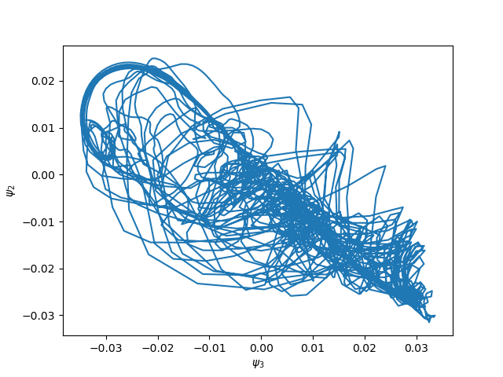
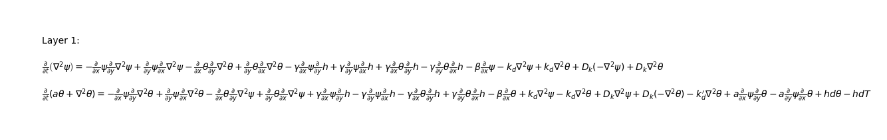
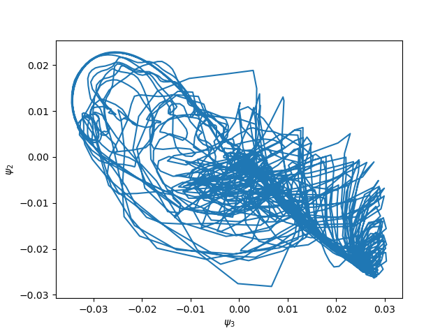
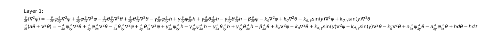
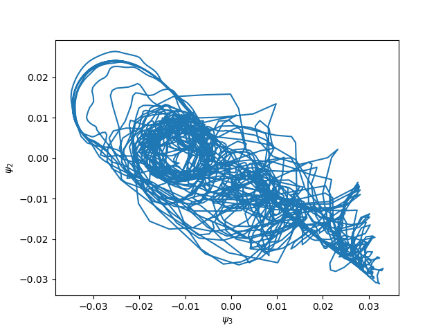

Various tricks
On this page, we list several tricks on how to do this or that, related to particular aspects of the modelling based on systems of partial differential equations.
Spatially varying parameters
It is possible in LayerCake to add parameters varying as a function of the coordinates. To illustrate this, we are going to modify a spatially uniform parameter in one of the examples, namely the Reinhold & Pierrehumber model one.
In this model, two terms are representing the friction of the bottom layer with the ground:
\(-\frac{k_d}{2} \nabla^2 (\psi - \theta)\) for the equation involving the barotropic streamfunction \(\psi\)
\(+\frac{k_d}{2} \nabla^2 (\psi - \theta)\) for the equation involving the baroclinic streamfunction \(\theta\)
where the parameter controlling the friction is \(k_d\). The full equations of the model can be found here.
Running the LayerCake code produces the following figure:
{kind=link}

which is a section of the model’s attractor in the \(\psi_2, \psi_3\) plane.
Now we can modify the original model’s equations by making the parameter \(k_d\) varies as
This can be done by using the ProductOfTerms objects to do the product of
a LinearTerm term involving a ParameterField field representing
the spatial variation of the parameter, and the Laplacian terms representing \(\nabla^2 (\psi - \theta)\).
It can be implemented with a few lines added to the Reinhold & Pierrehumber model code:
dfriction = ProductOfTerms(LinearTerm(Dk), OperatorTerm(psi, Laplacian, atmospheric_basis.coordinate_system, sign=-1))
dofriction = ProductOfTerms(LinearTerm(Dk), OperatorTerm(theta, Laplacian, atmospheric_basis.coordinate_system))
barotropic_equation.add_rhs_terms([dfriction, dofriction])
in the barotropic equation and
dfriction = ProductOfTerms(LinearTerm(Dk), OperatorTerm(psi, Laplacian, atmospheric_basis.coordinate_system, sign=1))
dofriction = ProductOfTerms(LinearTerm(Dk), OperatorTerm(theta, Laplacian, atmospheric_basis.coordinate_system, sign=-1))
baroclinic_equation.add_rhs_terms([dfriction, dofriction])
in the baroclinic equation, where Dk is the ParameterField object defining the spatial
variation of \(k_d\)
# Variable bottom friction
dk = np.zeros(len(atmospheric_basis))
dk[1] = 0.1 * kdp_deriv
Dk = ParameterField('D_k', u'D_k', dk, atmospheric_basis, inner_products_definition)
with \(k_{d,2} = D_{k,1} = 0.1 \, k_d\) (note the difference of index because of the Python-specific indexing starting from zero). The equations LaTeX representation now clearly shows the new terms:

with the appearance of the \(D_k \nabla^2\) terms.
The impact of this spatial variation of the bottom friction coefficient on the model’s dynamics is clearly visible on the 2-dimensional section of the attractor:
{kind=link}

(Compare with the first figure above.)
Usage of mathematical expressions in the PDEs
Mathematical function can appear in some models PDEs. In general, these are functions of the model’s domain coordinates.
Modelling terms involving mathematical functions (of the coordinates) can be implemented in LayerCake using the
Expression class. In this section, we recycle the example of the
previous one by modifying again the friction with the bottom layer in
the Reinhold & Pierrehumber model:
which means that the friction is higher in the higher latitude.
To implement this, we simply need to create an Expression object to
represent \(F(y)\) as follow:
# Variable bottom friction
from sympy import sin
kd_deriv_y = Parameter(0.1 * kd_deriv, symbol=Symbol('k_dy'), latex='k_{d,y}')
F = Expression(kd_deriv_y.symbol * sin(y), expression_parameters=[kd_deriv_y,], latex=r'k_{d,y} \sin(y)')
where we set \(k_{d,y} = 0.1 \, k_d\).
Then the variable friction with the bottom can be added like in the previous section, involving the expression
F as prefactor:
dfriction = OperatorTerm(psi, Laplacian, atmospheric_basis.coordinate_system, prefactor=F, sign=-1)
dofriction = OperatorTerm(theta, Laplacian, atmospheric_basis.coordinate_system, prefactor=F)
barotropic_equation.add_rhs_terms([dfriction, dofriction])
dfriction = OperatorTerm(psi, Laplacian, atmospheric_basis.coordinate_system, prefactor=F, sign=1)
dofriction = OperatorTerm(theta, Laplacian, atmospheric_basis.coordinate_system, prefactor=F, sign=-1)
baroclinic_equation.add_rhs_terms([dfriction, dofriction])
and this result in the following equations in LayeCake:

where the terms involving \(\sin(y)\) are appearing.
Constructing this model and then integrating it then yield:
{kind=link}

(Again, you can compare with the first figure above.)
Free-threading
Since Python 3.14, a free-threaded version of Python is available. LayerCake has been tested for it and seems so far to run smoothly.
This feature is particularly useful if you try to derive complicate, big models with a large number of modes. LayerCake will then use multiple threads to perform Sympy symbolic evaluations, while the integration of the inner products will still be done using multiple processes. When being used in a free-threading environment, this is the default behavior, but this can be controlled by environment variables:
- The
LAYERCAKE_PARALLEL_METHODenvironment variable defines how the Sympy symbolic evaluations are done. It can take two different values: threads: the evaluations will be done using threadsprocesses: the evaluations will be done using processes. In some complicate cases, it might lead to wrong answers or even crash. This mode is thus not recommended unless you know what you are doing.
If this environment variable is not defined, then LayerCake default behavior is to use threads.
- The
The
LAYERCAKE_PARALLEL_INTEGRATIONenvironment variable controls the Sympy symbolic integration parallelization. If set tonone, the parallelization will be deactivated. Otherwise, it will be parallelized using processes. If this environment variable is not defined, then LayerCake default behavior is to parallelize using processes.
For example,
LAYERCAKE_PARALLEL_METHOD=processes python examples/atmospheric/barotropic_one_layer.py
will launch the barotropic one layer script with Sympy symbolic evaluation being done using processes.
Warning
Launching the previous line with symbolic evaluation being done in processes with a free-threaded Python will result in
a crash. Use the free-threaded Python only if LAYERCAKE_PARALLEL_METHOD is set to threads.
Installing the free-threaded version of Python can be done using Anaconda, by typing:
conda env create -f environment_freethreading.yml
which will create a conda environment layercake_ft.
Upon activation:
conda activate layercake_ft
any Python code will be run in free-threading mode.
Warning
Python free-threading mode is still somewhat experimental, and the obtained models and results must be scrutinized with care and double-checked.